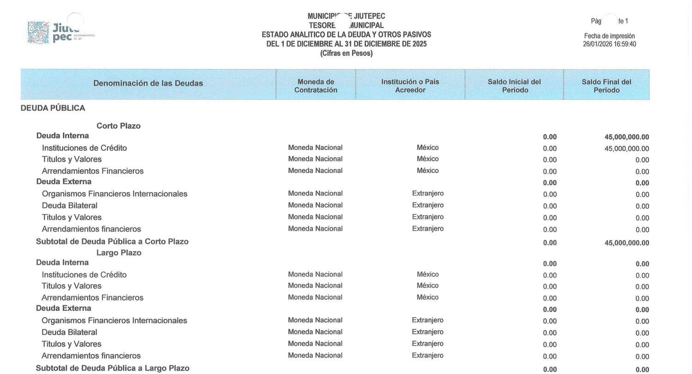
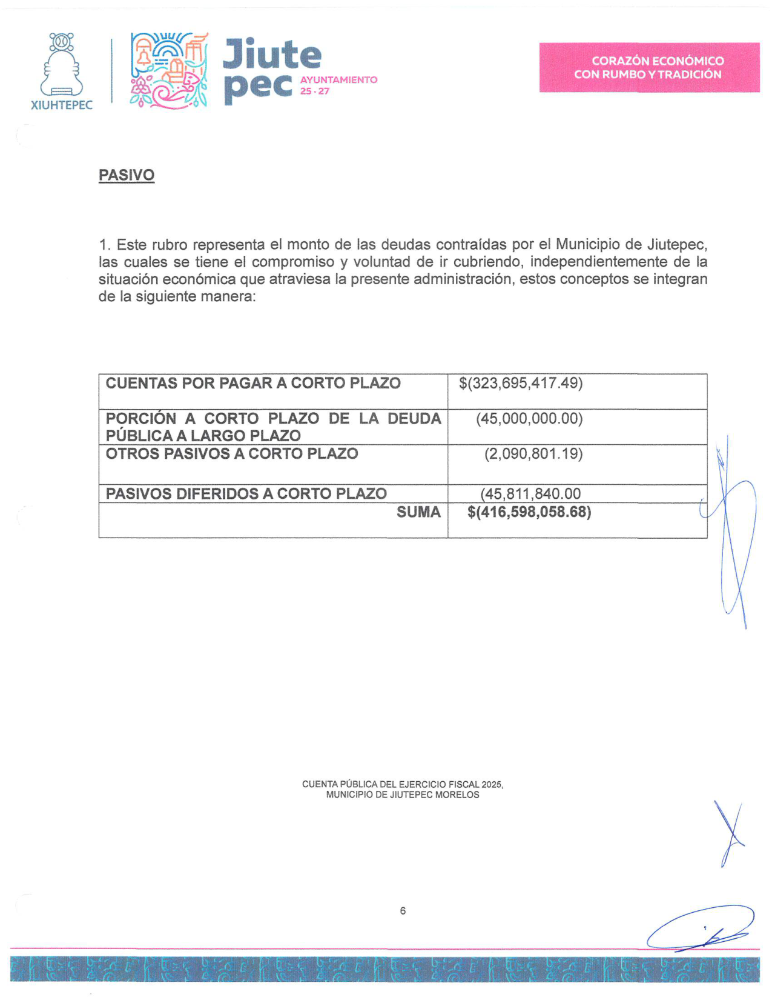
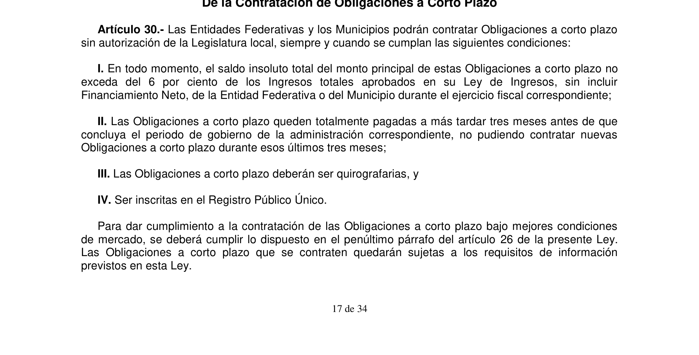
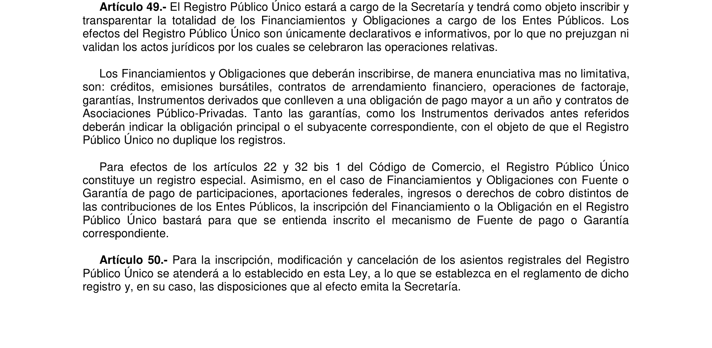
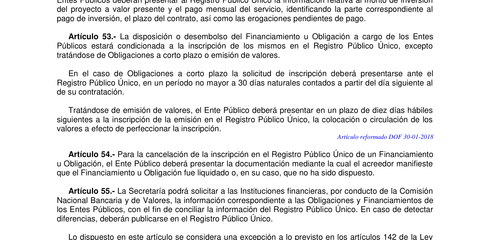
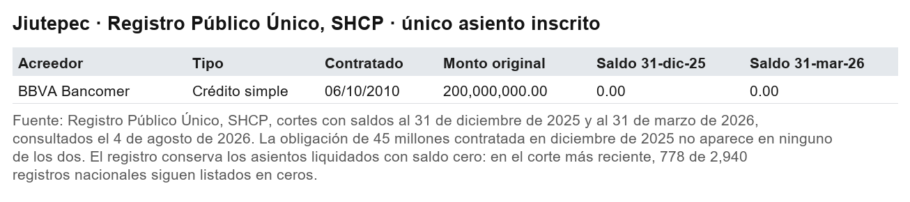
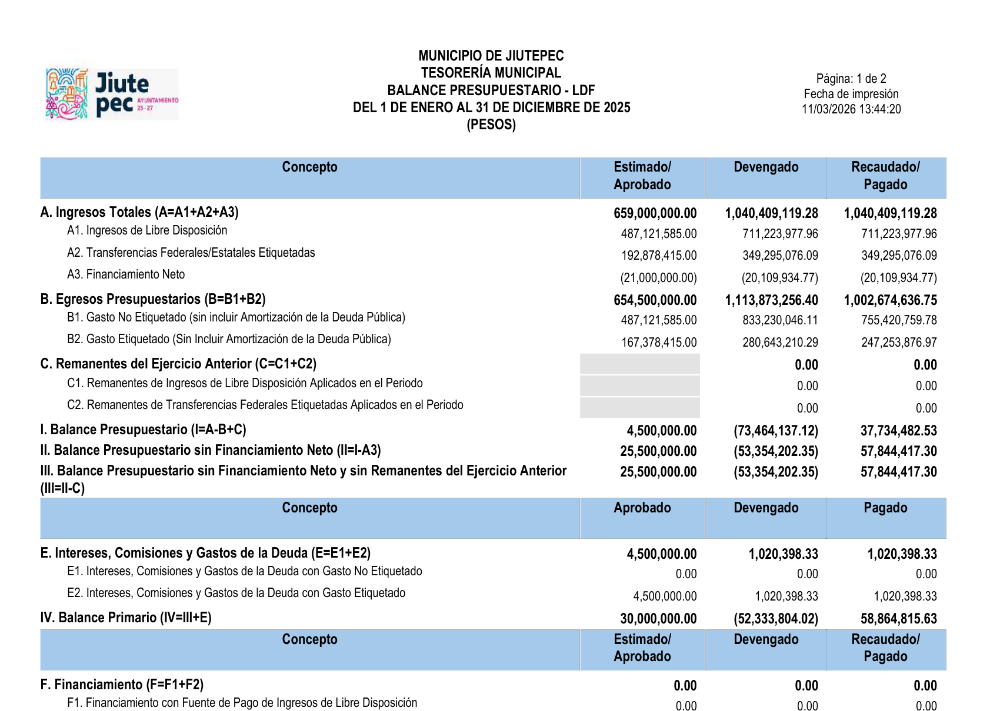

El préstamo que nadie necesitaba
Jiutepec recaudó 382 millones de pesos por encima de lo presupuestado en 2025 y cerró el año con 111 millones en caja. Aun así, en diciembre contrató 45 millones de deuda bancaria: 4.2 millones arriba del tope que fija el artículo 30 de la Ley de Disciplina Financiera, sin inscribirla en el Registro Público Único dentro del plazo legal, y clasificada de tres maneras distintas en tres documentos del propio municipio. Las Notas que deberían explicar el crédito no dicen banco, tasa ni destino.
Esta serie ha contado hasta hoy la historia de un municipio al que el dinero no le alcanzaba. Hoy toca la contraria: la de uno al que le sobró.
A Jiutepec le fue bien en 2025. Mejor que a casi cualquier municipio de Morelos.
Su presupuesto estimaba ingresos por 680 millones de pesos. Recaudó 1,062 millones 429 mil. Le entraron 382 millones de más, y no lo decimos nosotros: su propio Estado Analítico de Ingresos los llama, textual, ingresos excedentes.
Y cerró el año con dinero en el banco. Su Estado de Flujos de Efectivo, firmado bajo protesta de decir verdad, reporta efectivo y equivalentes al 31 de diciembre por 111 millones 237 mil pesos. Dos veces y media lo que tenía al empezar el año.
Reténgase eso: 382 millones de más recaudados, 111 millones en caja.
Lo que hizo en diciembre
En diciembre de 2025, con ese dinero en la cuenta, el municipio contrató deuda.
Su Estado Analítico de la Deuda y Otros Pasivos lo registra sin adornos: la deuda de corto plazo con instituciones de crédito empieza el periodo en cero y lo termina en 45 millones de pesos exactos. La obligación nació en diciembre.

¿Para qué pide prestado un municipio que acaba de recibir 382 millones que no esperaba y que tiene 111 en el banco?
No lo sabemos. Y no es una cortesía retórica: fuimos al lugar donde debería estar la respuesta. Las Notas a los Estados Financieros, que existen exactamente para explicar estas cosas, despachan todo el pasivo en un párrafo que no dice qué banco prestó, ni a qué tasa, ni para qué. Dice, eso sí, que las deudas se irán cubriendo "independientemente de la situación económica que atraviesa la presente administración".
La situación económica que atraviesa. Con 382 millones de excedentes.
Dos páginas después, las mismas Notas presumen "estrategias Financieras y medidas de austeridad" que reflejan "un ahorro". En el año en que el gasto terminó 66.9 por ciento arriba de lo aprobado: el presupuesto era de 680 millones y se ejercieron 1,135.

El tope que la ley le pone
La Ley de Disciplina Financiera de las Entidades Federativas y los Municipios permite contratar obligaciones a corto plazo sin pasar por el Congreso local, pero con condiciones. La primera es un tope, y conviene citarla textual.
Artículo 30, fracción I: el saldo de estas obligaciones no puede exceder, en ningún momento, "del 6 por ciento de los Ingresos totales aprobados en su Ley de Ingresos, sin incluir Financiamiento Neto".

Hagamos la cuenta con los números del propio municipio. Su Estado Analítico de Ingresos consigna un estimado total de 680 millones de pesos, sin renglón de financiamiento. El 6 por ciento de 680 millones son 40 millones 800 mil pesos.
Debe 45 millones.
Cuatro millones 200 mil pesos arriba del tope. Un 10.3 por ciento de exceso.
Y aquí hay un detalle que parece de trámite y no lo es. En la Guía de Cumplimiento de la propia ley, que el municipio llena y firma, el renglón "Límite de Obligaciones a Corto Plazo" declara: 45 millones. Exactamente igual a su deuda, al peso.
Pero 45 millones solo serían el 6 por ciento de una Ley de Ingresos de 750 millones. La suya, según su propio estado analítico, es de 680. El límite que el municipio se declaró a sí mismo no sale de sus propios números.
El registro donde no está
¿Para qué pide prestado un municipio al que le acaban de sobrar 382 millones?
La cuarta condición del mismo artículo 30 es lapidaria: las obligaciones a corto plazo deben "ser inscritas en el Registro Público Único".
Ese registro lo lleva la Secretaría de Hacienda, es federal, es público, y su objeto, según el artículo 49 de la misma ley, no admite excepciones: "inscribir y transparentar la totalidad de los Financiamientos y Obligaciones a cargo de los Entes Públicos". La totalidad.

Y el artículo 53 pone fecha: para las obligaciones a corto plazo, la solicitud de inscripción debe presentarse "en un período no mayor a 30 días naturales contados a partir del día siguiente al de su contratación".
Treinta días desde diciembre de 2025. El plazo venció en enero de 2026.

Descargamos el registro dos veces: el corte con saldos al 31 de diciembre de 2025 y el corte con saldos al 31 de marzo de 2026, tres meses después de vencido el plazo.
El Municipio de Jiutepec tiene un solo asiento en toda la historia del registro: un crédito con BBVA Bancomer contratado en 2010, saldo cero.
Los 45 millones de diciembre no aparecen. Ni en un corte ni en el otro.

Y no es que el registro borre lo que se paga: conserva los asientos liquidados con saldo cero, empezando por el propio BBVA de Jiutepec. Si la obligación estuviera inscrita, ahí estaría.
Un préstamo con tres nombres
Hay algo más, y lo señalamos porque descarta el descuido aislado.
El mismo crédito aparece con tres clasificaciones distintas en tres documentos del mismo municipio, impresos con días de diferencia. El Estado Analítico de la Deuda lo registra como deuda de corto plazo con instituciones de crédito. Las Notas a los Estados Financieros lo llaman "porción a corto plazo de la deuda pública a largo plazo", cuando el propio analítico reporta la deuda de largo plazo en cero. Y el Balance Presupuestario que exige la Ley de Disciplina Financiera reporta el renglón de financiamiento del ejercicio en cero pesos, como si no se hubiera contratado nada.

Corto plazo, largo plazo y nada. Tres documentos, tres versiones del mismo dinero.
Lo que juega en contra de esta lectura
Se lo debemos al lector, como siempre.
Puede que la inscripción esté en trámite y aparezca en un corte futuro; el registro se actualiza todos los días y nosotros lo volveremos a revisar el día que esta columna se publique. Puede que exista una autorización del cabildo o de la Legislatura que le dé al crédito otra naturaleza jurídica, y que el municipio pueda exhibirla. Y el denominador de nuestro cálculo, los 680 millones, sale del estado analítico que el propio municipio firma; si su Ley de Ingresos publicada dijera otra cifra, el tope cambiaría, aunque para volver legal la deuda tendría que decir 750 millones, no 680.
Todo eso se resuelve con un solo documento: el contrato. Que es, justamente, el que no está donde la ley ordena ponerlo.
Y la pregunta de siempre
Nada de esto requirió facultades de fiscalización. Dos descargas de Hacienda, cinco documentos del portal del municipio, y la ley abierta en los artículos 30, 49 y 53. Una tarde de trabajo.
La Entidad Superior de Auditoría y Fiscalización, que cuesta 50 millones 400 mil pesos al año, todavía no llega a las cuentas de 2025 de ningún municipio. Cuando llegue a la de Jiutepec, si el ritmo se mantiene, esta administración estará terminando.
Un municipio puede recibir 382 millones que no esperaba, guardar 111 en el banco, y aun así firmar un crédito de 45 en diciembre, arriba de su tope legal, sin inscribirlo donde la ley obliga, y clasificarlo de tres maneras distintas en tres documentos.
Puede, porque nadie está leyendo los documentos juntos.
Nosotros los leímos. En una tarde.
Documentos que respaldan cada cifra
Las capturas que acompañan esta columna son las páginas de donde salió cada cifra: cinco documentos de la Cuenta Pública 2025 que el propio municipio firma, la consulta al Registro Público Único de la Secretaría de Hacienda en sus dos cortes, y los artículos de ley citados, reproducidos del texto oficial vigente. Cualquier lector puede rehacer el ejercicio completo: todos los documentos son públicos y gratuitos.
La pieza anterior del arco: Cero pesos, diez millones Ver el expediente →
SRVO
Fuentes y referencias citadas
- Municipio de Jiutepec, Cuenta Pública del ejercicio fiscal 2025: Estado Analítico de Ingresos, Estado Analítico de la Deuda y Otros Pasivos, Estado de Flujos de Efectivo, Notas a los Estados Financieros, Balance Presupuestario LDF y Guía de Cumplimiento. Documentos firmados por el Presidente Municipal Eder Eduardo Rodríguez Casillas, el Tesorero Javier Ramírez Marchan y el Director General de Contabilidad Joaquín Ramírez López. Fechas de impresión: enero a marzo de 2026.
- Registro Público Único, Secretaría de Hacienda y Crédito Público. Cortes con saldos al 31 de diciembre de 2025 y al 31 de marzo de 2026. Consulta del 4 de agosto de 2026.
- Ley de Disciplina Financiera de las Entidades Federativas y los Municipios, artículos 30, 49 y 53. Cotejados contra el texto vigente, última reforma publicada en el Diario Oficial el 10 de mayo de 2022.
- 45 Digital Noticias, "Cincuenta millones y ni una palabra", 10 de agosto de 2026.